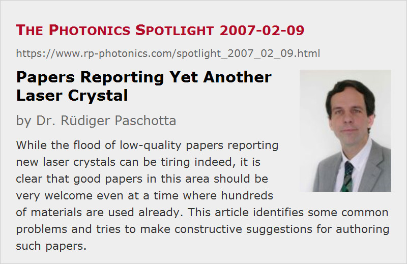

Papers Reporting Yet Another Laser Crystal
Posted on 2007-02-09 as a part of the Photonics Spotlight (available as e-mail newsletter!)
Permanent link: https://www.rp-photonics.com/spotlight_2007_02_09.html
Author: Dr. Rüdiger Paschotta, RP Photonics Consulting GmbH
Abstract: While the flood of low-quality papers reporting new laser crystals can be tiring indeed, it is clear that good papers in this area should be very welcome even at a time where hundreds of materials are used already. This article identifies some common problems and tries to make constructive suggestions for authoring such papers.

Ref.: encyclopedia articles on laser crystals, gain media, solid-state lasers
Over the years, we have seen thousands of journal papers and conference talks presenting novel laser crystals, corresponding spectroscopic data and first demonstrations of laser action, mode locking, etc. The repetitive style of such reports can be tiring. So one may ask, do we really want all such papers?
My answer to this admittedly somewhat provocative question is: no, we don't like many of them, in fact would do better without them, but also we wouldn't like to miss quite a few of those papers.
Leaving aside questions of style, technical quality and alike for a moment, we should realize that even though a huge variety of laser crystals is known, this certainly doesn't mean that we don't need any new ones. Well, for some kinds of solid-state lasers, e.g. low or medium power continuous-wave lasers, existing gain media such as YAG or Nd:YVO4 could hardly be much better in terms of performance. For example, their gain efficiency could not be significantly better for a given gain bandwidth, because spontaneous emission sets fundamental limits. However, accessible laser wavelengths will remain a topic of interest for many years. Furthermore, there are kinds of lasers where available crystal materials do leave a lot of room for further wishes. In particular, what is available for the generation of ultrashort pulses with passive mode locking is still in some respects far from what would be convenient and physically possible. For example, a better compromise between a large gain bandwidth and high thermal conductivity, combined with large laser cross sections and a smooth shape of the gain spectrum, should be physically possible, even though we know e.g. that some factors which lead to a large gain bandwidth often tend to reduce the thermal conductivity. So a further search for better crystal materials may indeed bring great benefits for the performance of such lasers.
The quality of papers is a different matter, however. Indeed, experts (including referees) are tired of being flooded with papers of doubtful quality. In the context of laser crystals, the following problems are frequently encountered:
- Incomplete data. It doesn't help to advertise crystal materials before their essential properties are known. We understand that researchers need to publish. But does it really help (even the author) to publish more or less useful announcements, saying e.g. that the novel crystal Yb:XYZ does indeed exhibit lasing, without knowing cross sections, upper-state lifetime, quantum efficiency, etc.?
- Unconvincing or incomplete discussion of the material's potential.
To name an extreme (but frequently encountered) case, something like the inverse of the FWHM gain bandwidth (or even just fluorescence bandwidth) is often claimed to be the potential pulse duration for a mode-locked laser based on such a crystal.
This is just nonsense; particularly if the gain spectrum is not smooth but exhibits some sharp peaks, the realizable pulse durations are normally much, much longer.
Similarly, the importance of the magnitude of emission cross sections for passive mode locking without Q-switching instabilities is often overlooked.
Other issues come up with claims that certain crystals are well suitable for application in thin disk lasers, often motivated by little more than the impression that an association with such high power lasers might look good. Very high doping concentrations are claimed to be useful in cases where they are clearly not advantageous.
One type of problems may just result from the limited expertise in laser design issues (when the art of growing crystals is already difficult enough), while another one is an extreme bias, omitting e.g. the discussion of any disadvantages of a material. - Meaningless “first XYZ” claims. For example, what is the importance of the claim that a first diode-pumped (or mode-locked, single-frequency, etc.) laser has been built based on the new crystal Yb:XYZ, if that laser has a performance which is far from being competitive with that of previous lasers, and which doesn't allow us to learn anything substantial on the material?
But again, we do need better crystals, and good papers on such developments should be warmly welcome! To be constructive, here are some suggestions for authoring such papers:
- In the introduction, put the material and its development into a proper context. (For example: We are trying to find a crystal material for broader wavelength tunability than ZYX, while preserving properties A, B and C. Material XYZ may be suitable; we are addressing possible concerns related to D, E and F by identifying an improvement of the growth process and by delivering new experimental data.)
- Try to provide comprehensive and well checked spectroscopic information, e.g. on absorption and emission cross sections, lifetimes, quantum efficiency, etc. Also try to check for detrimental effects such as quenching processes, excited-state absorption, etc. If this cannot all be provided, don't hesitate to state what still has to be done. (Referees, please don't abuse such hints for rejection if enough useful information is presented!) Properly describe the used methods.
- Try to make a decent assessment of the real potential of the material. Don't simply take over common claims; if necessary, check with an expert on laser design issues, possibly from an external institution. (It doesn't hurt to make an acknowledgment for such inputs from people whose contributions don't justify a coauthorship.)
- If you perform tests in a laser setup, be clear about the goals. Is it to quantitatively check whether the material behaves as it should, according to the spectroscopic data gathered so far? (That could be very useful.) Is it to demonstrate superior performance, compared to other crystals? (Try then to make sure that the comparison is meaningful.) Or just to demonstrate that the stuff lases at all, possibly for the first time (see above)? Attempts to meet all such goals at the same time will usually fail.
Of course, it is not all about authoring; first comes the hard work … But remember that a good paper will have the chance to be cited quite frequently, and will rightly earn more reputation.
By the way, you may suggest really good laser crystal papers (and of course papers on many other topics) for being cited in the Encyclopedia of Laser Physics and Technology.
This article is a posting of the Photonics Spotlight, authored by Dr. Rüdiger Paschotta. You may link to this page and cite it, because its location is permanent. See also the RP Photonics Encyclopedia.
Note that you can also receive the articles in the form of a newsletter or with an RSS feed.
Questions and Comments from Users
Here you can submit questions and comments. As far as they get accepted by the author, they will appear above this paragraph together with the author’s answer. The author will decide on acceptance based on certain criteria. Essentially, the issue must be of sufficiently broad interest.
Please do not enter personal data here; we would otherwise delete it soon. (See also our privacy declaration.) If you wish to receive personal feedback or consultancy from the author, please contact him e.g. via e-mail.
By submitting the information, you give your consent to the potential publication of your inputs on our website according to our rules. (If you later retract your consent, we will delete those inputs.) As your inputs are first reviewed by the author, they may be published with some delay.
|  |
If you like this page, please share the link with your friends and colleagues, e.g. via social media:
These sharing buttons are implemented in a privacy-friendly way!